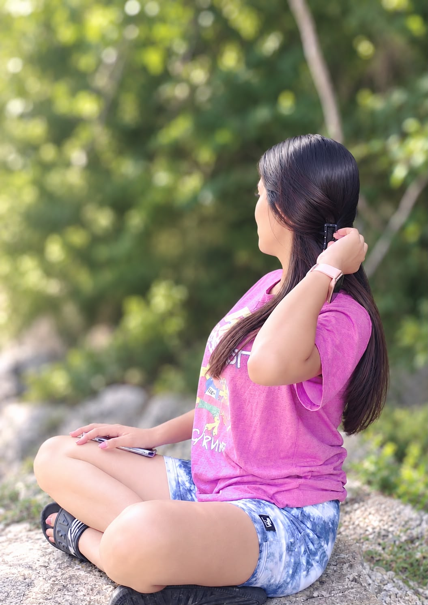
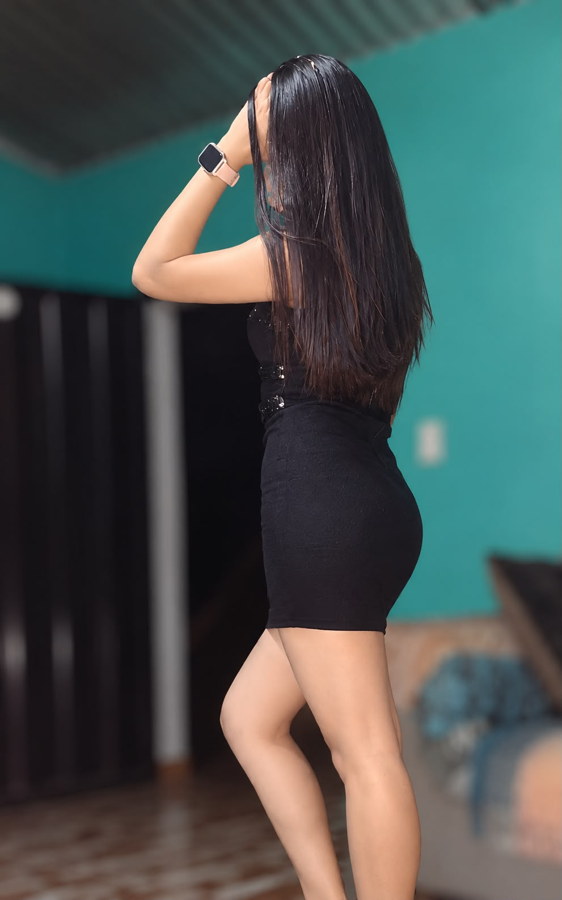
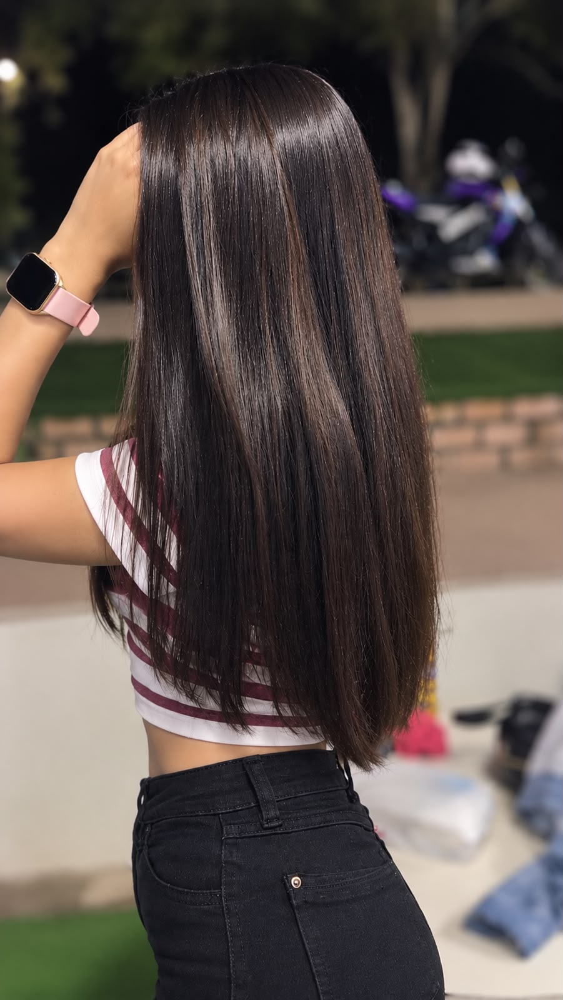
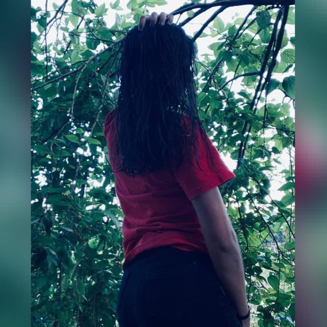
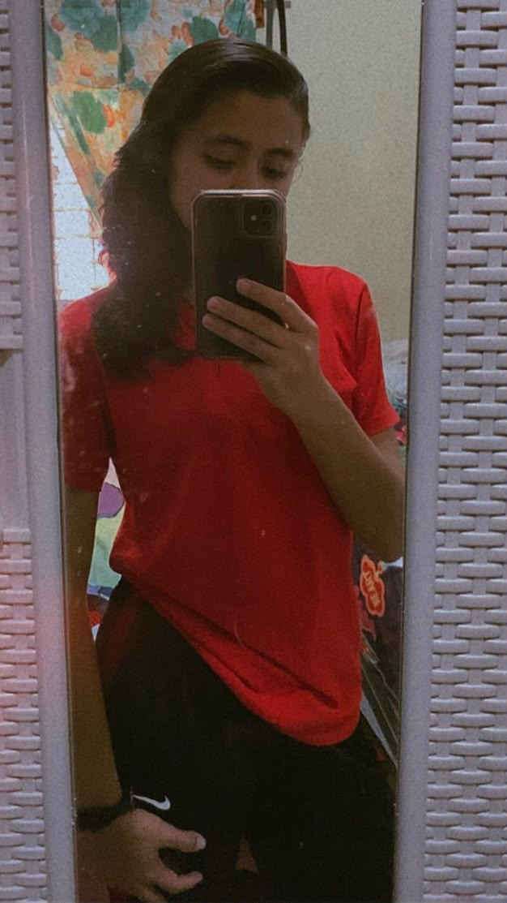
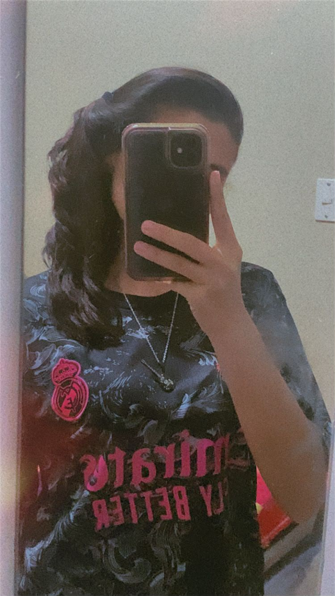
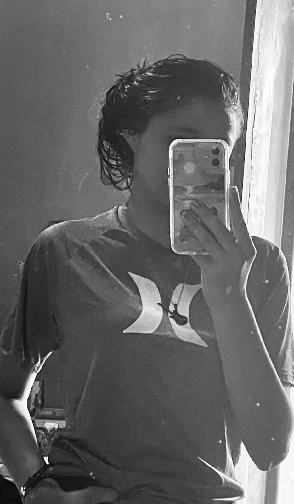

Lesly Anahí Dubón Melgar
La persona que más quiero y amo, la que siempre amaré, mi niña bonita, mi princesa. Y sí, lo siento Disney, pero yo tengo a una princesa más bonita que todas las que tú tienes.

Para usted, mi niña
Niña, desde que llegó a mi vida, muchas cosas cambiaron. Los días tienen otro significado y los pequeños momentos se convirtieron en recuerdos que quiero conservar. Cada vez que me encuentro con usted es un momento que se queda guardado en mí para siempre. La amo, niña, y siempre, siempre quiero estar con usted hasta donde usted me lo permita.
No sé qué nos depare el futuro, pero sí sé que quiero seguir creando momentos con usted, seguir riéndome contigo y seguir escuchando cada historia que usted me cuenta. Cada vez que me equivoco, al final agradezco a Dios que siempre busca la manera de que volvamos. Mi niña, le pido a Dios que sigamos teniendo razones para decir cuánto la quiero, cuánto la amo y cuán especial es para mí.
Con todo mi amor,
Yahir, su novio jeje, mentiras...
bueno, usted para mí sí es mi novia. ❤️
"La amo, niña".
Te amo, mi niña
¿Que por qué usted?
Porque entre tantas personas en el mundo, hay alguien que hace que mis días sean mucho más especiales.

La persona que amo ❤️
Niña, sí, quizá soy un loco en ocasiones, pero soy así más que todo porque estoy loquito por usted, jeje, mi guapa.

Solo con usted, mi guapa ✨
Porque cualquier momento con usted
es especial.
Nuestro primer contacto, nuestro primer
abrazo (claro, falta el primer beso).

Siempre usted, mi niña ❤️
La quiero mucho, mi niña preciosa. Siempre habrá un motivo para recordarle lo especial que es para mí.

Mi niña bonita 💗
No importa cuántas veces vea sus fotografías, siempre encuentro una razón para sonreír y recordar lo mucho que la quiero.

Mi persona especial ❤️
Hay personas que llegan a nuestra vida y terminan convirtiéndose en recuerdos que queremos conservar siempre.
La elegiría una y mil veces, niña.
Gracias por formar parte de mi vida.

Esta página es solamente una pequeña forma
de recordarle lo especial que es para mí.
Y si algún día vuelve a visitarla,
quiero que recuerde que cada detalle
fue preparado pensando en usted.